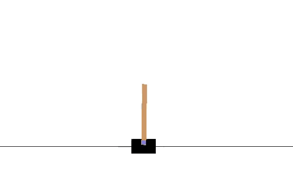
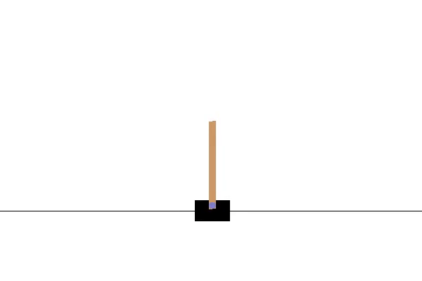
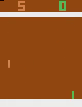
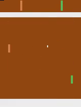

Deep Reinforcement Learning - OpenAI's Gym and Baselines on Windows
17.07.2018 - Samuel Arzt
This post will show you how to get OpenAI's Gym and Baselines running on Windows, in order to train a Reinforcement Learning agent using raw pixel inputs to play Atari 2600 games, such as Pong.
Introduction
I've been doing quite a bit of Machine Learning experiments lately, in particular experiments using Deep Reinforcement Learning. When I started getting into OpenAI's Gym and Baselines codebase, I was a bit surprised that they still did not officially support Windows. Fortunately, a lot of members of the active community, which has gathered around OpenAI, have shared their solutions for setting up Gym and Baselines on Windows through various GitHub issues and pull-requests. This post is merely a collection of those solutions and my personal experiences with getting the two frameworks to run. At the end of this post you will be able to train a Deep Reinforcement Learning agent to play Atari 2600 games, such as Pong, using the DQN code provided by Baselines. The agent's only inputs will be the game's pixels and score.
OpenAI's Gym and Baselines
Before we dive into the details, let's first talk about what OpenAI and their repositories Gym and Baselines are about. If you
already know all that, feel free to skip this section.
OpenAI is a non-governmental organization, which is dedicated to creating safe
artificial general intelligence. Quite some time ago, they released two open-source Python projects on GitHub called
Gym and Baselines.
Gym is meant to make comparing different Reinforcement Learning algorithms easier, by clearly defining the interface of learning
environments and by providing access to various standard benchmark environments such as Atari games or classic control tasks. For
example, the interaction between a very simple agent and a Gym environment could look like this:
done = False observation = env.reset() while not done: action = agent.act(observation) observation, reward, done, info = env.step(action)
Baselines on the other hand is a collection of a wide range of state-of-the-art implementations of modern Reinforcement Learning algorithms. These algorithms can for instance be used to train agents on the environments provided by Gym. Here is some sample code for training an agent using the Deep Q-Network (DQN) implementation of Baselines to play Atari Pong:
# Create and wrap the Gym environment
env = make_atari("PongNoFrameskip-v4")
env = deepq.wrap_atari_dqn(env)
# Create the Convolutional Neural Network used to approximate the Q-Function
model = deepq.models.cnn_to_mlp(
convs=[(32, 8, 4), (64, 4, 2), (64, 3, 1)],
hiddens=[256]
)
# Start learning for 10 million time steps
deepq.learn(
env,
q_func=model,
max_timesteps=10e6,
)
env.close() # Close everything once learning is done
Here we first create the Gym environment, wrap it with some wrappers for preprocessing the input (e.g. downscale the image to 84x84, grayscale, stack the last 4 frames) and then start learning using Baselines' DQN implementation.
Setting up Gym and Baselines on Windows
Since Windows is not officially supported by OpenAI, there are a few things you have to look out for when setting up Gym and Baselines on your Windows machine. If you just want to see the necessary commands and don't care about what they do, you can skip straight to the summary. Otherwise here is a detailed step-by-step guide for getting the two frameworks to work:
1) Anaconda and C++
First, we will have to install a conda package manager to install all the required packages, including Python. I recommend
downloading the full Anaconda manager, however, you can also download a minimal installation called Miniconda. Select the
Python 3.6 download and make sure you check both advanced options when installing Conda ("add to path" and
"register
as system Python"
):
Anaconda (Full Manager) or
Miniconda (Minimal Version)
Furthermore, we will need a modern C++ compiler. For instance, if you have Visual Studio 2017 with C++ support installed, you are good to go. Otherwise you can get that here.
2) Gym Dependencies
Now we can start installing some Windows specific Gym dependencies in order to get the Atari emulator working on Windows.
We will be using the command prompt to do so. Apparently PowerShell has some bugs in combination with conda, so I recommend
using either the Anaconda Command Prompt (you can simply find it with Windows search) or good ol' cmd.
To begin with, we create a new conda environment. Everything we install will then be configured for this particular conda
environment:
> conda create -n <env-name> python=3.6
This will create a new conda environment called <env-name> with Python 3.6 support. Next, actually activate the environment (you will always have to do this, whenever you want to work with a particular environment):
> conda activate <env-name>
Then we install git:
> conda install git
and, if you want to record videos of your agents, ffmpeg:
> conda install -c conda-forge ffmpeg
If you are using a non-English version of Windows this is were it gets a bit tricky. We want to install a Windows wrapper for the
Atari environment emulator, however, Pip has a bug throwing a "UnicodeDecodeError" when using non-English encoding. In order to
fix that, we have to apply this fix:
Open a new command prompt and enter 'chcp'. This will output the system default code (e.g. '936'). Now go to your Pip installation
location inside your Conda folder (e.g. Lib/site-packages/pip/, or pkgs/pip-x.x.x.../Lib/site-packages/pip/) and inside
the compat folder edit __init__.py. Around line 75 there should be a line saying 'return s.decode('utf_8')'. Replace
'utf_8' with your chcp code, e.g. 'return s.decode('cp936')'.
Once you have done all that, you can finally run the command for installing the Windows wrapper of the Atari emulator:
> pip install git+https://github.com/Kojoley/atari-py.git
3) Installing Gym
Similar to how we installed the previous components, we could simply install Gym using Pip, however, if you want to inspect
and tinker with Gym's source code, I recommend cloning the repository by hand:
Navigate to the folder you would like to clone the repository to, and type:
> git clone https://github.com/openai/gym.git > cd gym > pip install -e .
At this point you can verify that everything is working according to plan by running a random cartpole agent. Make sure you are at the root of your cloned Gym repository and that you still have the right Conda environment activated and type:
> python examples/agents/random_agent.py
A window should open showing a random agent trying to play Cartpole for a few seconds, which then closes with an exception (you don't have to worry about that for now). Note: running this example agent with ffmpeg installed will record a video of each episode to your disk.
If you see something similar to the gif above, you have successfully installed Gym! Note: An episode is terminated once the pole reaches a certain angle, hence the sudden jumps in position every time the pole is leaning too far to one side.
4) Installing Baselines
Next we want to install Baselines. First, make sure you are in the right Conda environment. Again, we clone and install the repository by first navigating to the folder to clone to, and then typing:
> git clone https://github.com/openai/baselines.git > cd baselines > pip install -e .
You are very likely to receive some errors while installing Baselines, since we didn't install all Gym environments (we only installed the Atari environments for now). Most of those errors will say something about MuJoCo missing, but you can ignore those errors, since we are only interested in the Atari environments for our purposes.
Next we have to install Tensorflow:
> pip install --upgrade tensorflow
This will install the CPU-only version of Tensorflow. We will look into how to optionally install GPU support later in this post.
Lastly we have to install some implementation of the MPI standard, a dependency OpenAI introduced semi-recently. I recommend getting the Microsoft implementation for Windows by downloading the .exe from MSDN.
At this point you can again verify that your installation of Baselines was successful, by running a DQN agent on Cartpole. While being located at the root of your Baselines repository, type:
> python baselines/deepq/experiments/train_cartpole.py
This will train an agent using DQN on the Cartpole task for 100K steps. Once training has finished (may take three to five minutes), you can watch the trained agent by running:
> python baselines/deepq/experiments/enjoy_cartpole.py
Note that the demonstration above is not a still image but actually a gif of a trained agent almost perfectly balancing the pole.
5) Training on Atari Games
Now it is finally time to train an agent on Atari games. In order to do so we first have to install a final dependency, OpenCV:
> pip install opencv-python
While the readme of DQN in the Baselines repository still mentions a file called train_pong.py, which has been removed quite some time ago, there is now a more general sample file for training on Atari environments located in baselines/deepq/experiments/run_atari.py. If you run this file without any parameters it will train an agent on the game Breakout using a Dueling DQN with Prioritized Experience Replay for a total of one million steps.
The script for running atari agents also allows you to customize some parameters such as the environment and the amount of steps. However before training an agent on Pong, I recommend adjusting the print frequency of the sample, by adding an additional argument to the call to deepq.learn on line 32 in run_atari.py:
deepq.learn( env, print_freq=1, ...
This will print the current status after every episode. Since episodes of Pong last until one player has reached a score of 21, these tend to be quite long. The default print frequency of 100 may only print every hour or so.
Similarly the checkpoint_freq parameter will only save models after the first 100 episodes elapsed, which might take more than 50K steps for Pong. In order to change that you can either adapt line 294 of simple.py or add a manual call to save the Tensorflow state in run_atari.py by adding a new import:
from baselines.common.tf_util import save_state
and calling the appropriate function after training terminates:
act = deepq.learn(...)
save_state("path/to/model")
Note: apparently the output path mustn't be just the filename (seems to be a bug in the way the OpenAI code retrieves
the directory part of the path-string. You can prepend ' ./ ' to save to the current execution directory).
Also: if you want to load the save later, simply naming the file 'model' will make that a lot easier (you won't have to adjust OpenAI's code
then).
In order to train an agent on Pong for 50K timesteps you can run the following command:
> python baselines/deepq/experiments/run_atari.py --env "PongNoFrameskip-v4" --num-timesteps 50000
Even though we reduced the amount of steps to 50K, this might still take quite a long time to train (up to an hour on a normal, mid-tier computer), especially since we have not configured the GPU support for Tensorflow yet.
Unfortunately, spectating Atari agents has become a bit tricky since OpenAI changed the way Atari DQN models are saved / loaded without updating their code for watching trained agents. You could simply write your own separate script for spectating, however probably the easiest / quickest way is to simply adapt simple.py to render the environment after each step:
new_obs, rew, done, _ = env.step(env_action) env.render()
Additionally you can add a sleep of 15 ms to achieve roughly 60 fps, by first importing the time module and then adding:
env.render() time.sleep(0.015)
Of course, you should only render the environment when spectating the agent - not during training - as it slows down the process immensely.
In order to load an existing model, simply pass the path to the save-file as an additional argument to run_atari.py: --checkpoint-path <path> (the file has to be named 'model' though). After 50K steps of training your agent might look something like this (the agent is controlling the green pedal):
As you can see, the agent still performs pretty randomly even after 50K steps. That is because 50K steps is actually not even close to how long agents are usually trained for (a number at least in the millions). So before starting to seriously train an agent, I recommend also completing the next step of enabling GPU support, even though it is only optional.
6) GPU support (optional)
If you own a NVIDIA GPU you can install Tensorflow's CUDA support in order to use your GPU for training agents, and therefore significantly boosting training time. As a quick example, I have measured a training time of roughly 30 steps per second using an Intel i7 (4th generation, i.e. a relatively old CPU), while achieving roughly 120 steps per second with GPU support of a NVIDIA GTX 780, which is also a relatively old GPU but a four times speedup.
- First, download the CUDA Toolkit 9.0 (has to be 9.0) and install the Base Installer (takes quite a while).
- Secondly, install cuDNN v7.0.5. This will require you to create a free NVIDIA Developer Account. Make sure to download cuDNN v7.0.5 for CUDA 9.0 and extract the zip to a folder seperate from your CUDA Toolkit folder.
- Now add the path to the bin folders of the CUDA Toolkit and cuDNN to your %PATH% environment variable (you might have to restart anything that needs access to these variables, in order for them to be recognized).
-
Finally, install the GPU supported version of Tensorflow:
> pip install --upgrade tensorflow-gpu
Once you now start training an agent, you should see a lot of information being displayed about your GPU. In addition to that, when monitoring your VRam you will see that almost its entire capacity has been occupied. I will briefly explain why that happens and how to change that in the next section.
6.1) VRam Usage
As you might have already noticed, by default Tensorflow will map nearly all available VRam to the process on startup. According to their own documentation this is done in order to more efficiently use the GPU memory by reducing fragmentation.
However, if you want to either run multiple experiments at the same time or other programs while training in the background, it may be desirable to only allocate a certain percentage of the VRam or only the amount that is actually currently used. You can tell Tensorflow to do so by adjusting the session configuration. Basically you have to adjust the baselines code and pass a Config object with the desired configuration details to Tensorflow whenever a new session is created.
For DQN for instance you have to adapt line 171 of simple.py
sess = tf.Session()
to be:
config = tf.ConfigProto() config.gpu_options.allow_growth = True sess = tf.Session(config=config)
This will allow the VRam usage to grow over time, instead of mapping almost all of it from the start. You can find other options for the Tensorflow configuration in their dedicated article.
Another reason for enabling this option is a bug I frequently ran into when running experiments on a very dated GPU with only 2GB of VRam. Whenever I ran the same experiment a second time I was confronted with a wall of Cuda errors, which looked something like this:
failed to create cublas handle: CUBLAS_STATUS_ALLOC_FAILED failed to create cublas handle: CUBLAS_STATUS_ALLOC_FAILED failed to create cublas handle: CUBLAS_STATUS_ALLOC_FAILED could not create cudnn handle: CUDNN_STATUS_INTERNAL_ERROR could not destroy cudnn handle: CUDNN_STATUS_BAD_PARAM Check failed: stream->parent()->GetConvolveAlgorithms( conv_parameters.ShouldIncludeWinogradNonfusedAlgo(), &algorithms)
This seems to happen if previously not all memory was freed correctly (probably due to an abnormal shutdown, i.e. an exception or keyboard interrupt) and Tensorflow is then not able to map the memory to the new process correctly. Thankfully, changing the config to not map all of the memory fixes this issue.
Summary
There are a lot of things to look out for when setting up OpenAI's Gym and Baselines on Windows. There are also quite a lot of problems which arise from OpenAI updating their repository with new internal code, without updating legacy parts of the code-base. This article should give you a good starting point for training Deep Reinforcement Learning agents on a variety of Atari2600 games using Gym and Baselines.
Here is a quick-summary of all steps required:
- Download and install Anaconda
- Make sure you have a modern C++ compiler (i.e. VS 2017 with C++ support)
-
> conda create -n
python=3.6 > conda activate <env-name> > conda install git > conda install -c conda-forge ffmpeg - If you are using a non-English Windows, apply this fix
> pip install git+https://github.com/Kojoley/atari-py.git
-
Navigate to a folder to clone Gym to and type:
> git clone https://github.com/openai/gym.git > cd gym > pip install -e .
-
Verify Gym works correctly by running:
> python examples/agents/random_agent.py
-
Navigate to a folder to clone Baselines to and type:
> git clone https://github.com/openai/baselines.git > cd baselines > pip install -e .
(Ignore errors about MuJoCo) > pip install --upgrade tensorflow
- Download and install MS-MPI
-
Verify Baselines works correctly by running:
> python baselines/deepq/experiments/train_cartpole.py > python baselines/deepq/experiments/enjoy_cartpole.py
> pip install opencv-python
- Train DQN agents on any Atari environment using run_atari.py
- (Optionally) install GPU support for Tensorflow (see section 6)
To end this post, here is a DQN agent trained for one million steps to play a game of Pong:
If this article was helpful to you, feel free to like or retweet my post on Twitter or join the discussion if you have got something to add. I would love to hear from your experiences with OpenAI's frameworks!
Related Blogposts:
Explained In A Minute - Neural Networks